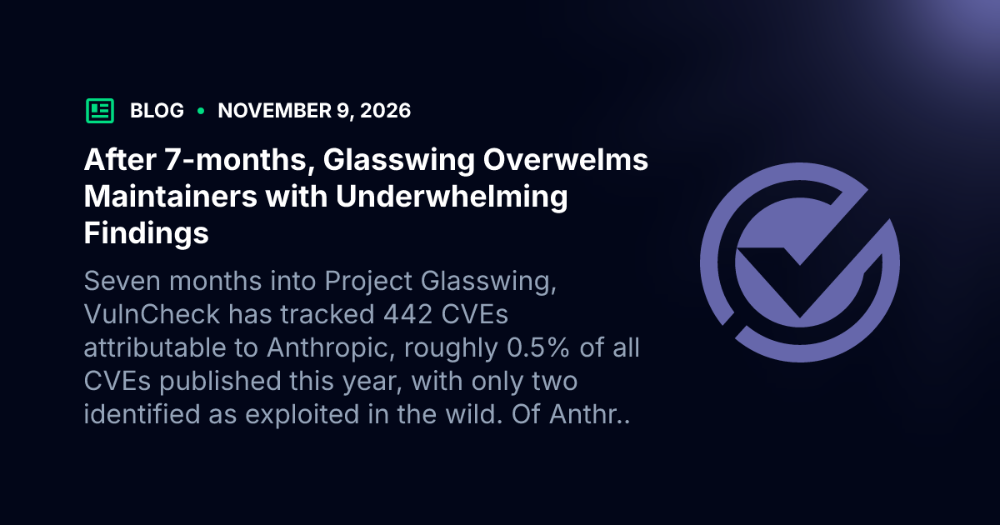
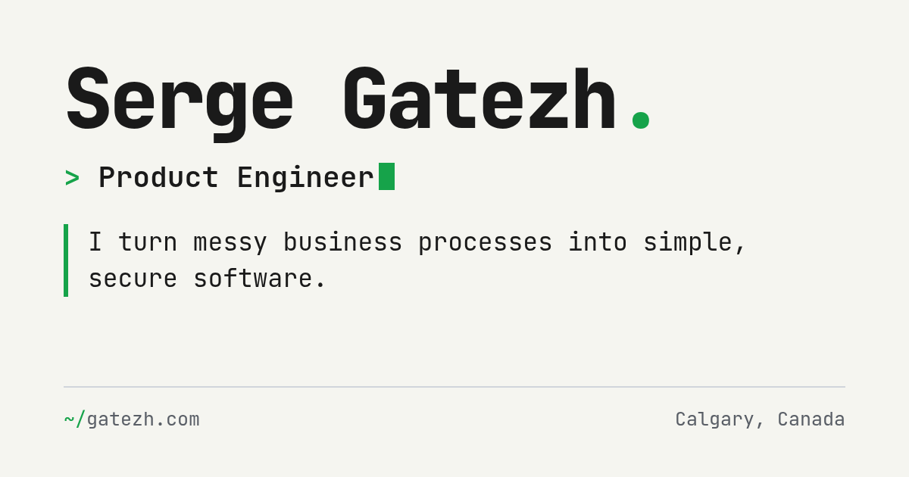

Smart-home essentials should work without the internet
A decade of rules puts switches and local control ahead of cloud dependency.
Field Desk★ 1070 pts · 380 comments · ▲ +529 since the last edition
Image accompanying the source article. docodethatmatters.com
CHICAGO — A home-automation practitioner describes a system whose essential functions stay running when the internet fails: Tasmota on ESP boards, an MQTT broker, and Node-RED on a Raspberry Pi. A broken Google Nest API helped shape that rule.[1]
Cloud services including Alexa remain in use, but are optional controls; wall switches and a local dashboard still work without them. On Hacker News, the author said the rules reflect ten years of experience and asked readers about unnecessary device dependencies.[2]
Follow-Up
Verisign preserves existing .name domains and redirects
New third-level registrations will still close.
Field Desk★ 895 pts · 193 comments · ▲ +340 since the last edition
Verisign has retracted a plan to terminate 22,000 .name domains and email redirects, according to domain holder Neil Fraser. Existing domains and redirects will remain indefinitely, he writes, although new third-level registrations will close.[3]
Fraser credits a campaign that included formal reconsideration requests, legal work and letters of support. One reader linked an ICANN policy document; the decision preserves existing registrations rather than reopening the namespace to new ones.[4]
Hardware Desk
Toyota revives Scion with a low-speed kei truck
The KEI-01 is slated for a fleet pilot, not general retail sales.
Hardware Desk★ 510 pts · 331 comments
Image accompanying the source article. www.theautopian.com
Toyota is reviving Scion and plans a late-2027 fleet pilot for the KEI-01, a compact truck based on the Toyota Pixis and Daihatsu Hijet Jumbo Cab, The Autopian reports. Its 660cc engine drives a vehicle certified under low-speed rules.[5]
The report says the truck is limited to under 25 mph, is legal only on roads posted below 35 mph, and carries a 600-pound payload including passengers. Readers questioned the speed restriction for ordinary city trips; fleet and agricultural uses are the initial target.[6]
Hardware Desk
Starlink Mini 2 draws discussion of portable connectivity
The product page was inaccessible to this edition.
Hardware Desk★ 454 pts · 489 comments
Starlink Mini 2 reached the front page, but its product page returned an access error, so the edition could not independently verify its specifications. The snapshot recorded 454 points and 489 comments.[7]
In the discussion, one reader cited 4.5 hours of battery life and 25–35 watts of consumption; another welcomed what they described as a standard USB-C port. Those figures and features are reader observations, not independently confirmed specifications.[8]
Security Desk
VulnCheck questions the Glasswing discovery-to-fix gap
The analysis counts 442 attributed CVEs and 217 ledger entries marked fixed.
Security Desk★ 429 pts · 203 comments

Image accompanying the source article. www.vulncheck.com
VulnCheck says it has tracked 442 CVEs attributable to Anthropic after seven months of Project Glasswing, including two it identified as exploited in the wild. Its analysis says Anthropic’s ledger listed 37,966 findings and 217 marked fixed as of November 2.[9]
The company reports 7,349 findings public and notes that curl rejected 19 of 34 published reports as vulnerabilities. A reader cautioned that the undisclosed findings cannot be evaluated from the public subset alone; the analysis is not a complete audit of all findings.[10]
Tools Desk
Browser teams publish guidance for coding agents
The guides steer generated code toward newer web-platform capabilities.
Tools Desk★ 401 pts · 131 comments
Modern Web Guidance supplies coding agents with targeted web-platform guidance and browser compatibility information. The project says it is stewarded by the Google Chrome, Microsoft Edge, Mozilla Firefox and MDN teams with the web community.[11]
Its examples include container queries, view transitions and accessibility patterns, with lightweight fallbacks. One reader suggested publishing a searchable plain-markdown index so agents could consult the material without installing a package.[12]
AI Desk
Report describes Apple’s Harbor app for local AI inference
The reported app is in a private preview under Claris.
AI Desk★ 359 pts · 354 comments
Image accompanying the source article. 9to5mac.com
9to5Mac reports that leaker Aaron Perris found evidence of Harbor, a Mac app intended to run open-weight AI models locally and connect multiple Macs over Thunderbolt 5. The reported setup pools unified memory for larger models or more concurrent requests.[13]
The article describes a private preview under Apple’s Claris brand, not a public release, and offers no confirmed launch date. A reader asked whether the system would work well without a display; the report does not answer that question.[14]
Science Desk
Terence Tao’s book introduces six mathematical concepts
The topics range from numbers and algebra to dynamics.
Science Desk★ 285 pts · 56 comments
Terence Tao’s Six Math Essentials introduces numbers, algebra, geometry, probability, analysis and dynamics as ways to understand the world, according to the book’s page. The page links an algebra excerpt and a review.[15]
Tao describes analysis as a means of handling the very large and the very small, and dynamics as the mathematics of change. One reader characterized the book as basic and suggested that readers with STEM degrees adjust their expectations.[16]
Security Desk
A Mac SSH guide examines hardware-backed keys
A non-exportable key also requires a separate recovery plan.
Security Desk★ 283 pts · 102 comments

Image accompanying the source article. gatezh.com
A macOS guide describes creating SSH keys in the Secure Enclave, where the private key is generated and used for signing without being exported. Its native example uses a P-256 key and Touch ID for each signing operation.[17]
The author says the native interface is awkward and is considering Secretive as an alternative. The guide recommends a second authorized key for recovery; one reader likewise warned that an enclave-created key cannot be backed up.[18]
AI Desk
Anthropic adds Claude Whiteboards and Sheets in beta
Claude Dashboards is generally available under the name Claude Data.
AI Desk★ 253 pts · 188 comments
Image accompanying the source article. claude.com
Anthropic says Claude Whiteboards and Claude Sheets are in beta on paid plans, while Claude Dashboards becomes generally available as Claude Data. Whiteboards supports shared brainstorming; Sheets builds and edits spreadsheets with formulas and formatting.[19]
Anthropic says Sheets currently has simple spreadsheet functionality and can export to XLSX or CSV. Claude Data adds data stories, while certified queries and live sharing remain beta; readers debated the company’s move into applications built on its models.[20]
Quote of the Day
“No internet, no problem. Core stuff has to work with the internet unplugged.”[1]Home automation author
Box Score
The Day in One Line
Local control led a front page spanning domain preservation, a small truck, vulnerability triage and new AI tools.
Front Page Ledger
Fresh stories
8
Follow-ups
2
Carried in digest
0
Combined points
4,939
Combined comments
2,427
Corrections & Clarifications
Scion truck. The headline says the vehicle is coming to America; the initial late-2027 program is fleet-only and low-speed, not a general retail launch.[5]
Harbor. The report describes a private preview and leaked information, not a publicly launched Apple app.[13]
Glasswing. The 37,966 findings are not 37,966 confirmed CVEs; the outside tracker counts 442 attributed CVEs, while much of the ledger is not public.[9][10]
Claude Sheets. Sheets is in beta and offers simple spreadsheet functionality; Claude Data is generally available, but its certified queries and live sharing are beta.[19]
Publisher’s Note
Local-first home automation leads; the .name decision also returns as a follow-up. The Starlink product page was inaccessible, so its discussion is reported with that limitation.
Snapshot taken November 11, 2026 at 14:00:14 UTC from the Hacker News Algolia front-page API. Scores and comment counts are snapshot values; article and thread content was fetched during this edition. Recent coverage was checked against the preceding four editions.